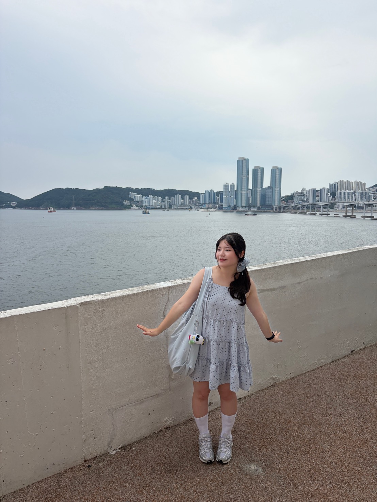

LET'S MAKE SOMETHING MEANINGFUL
有一個問題，
想一起解嗎？
不論是 AI 與資料、品牌內容、研究交流，或一個還沒完全成形的想法，都歡迎來聊聊。我會先理解情境，再一起找到值得做的下一步。

WORK WITH LULU
我們可以從這些事開始。
我喜歡跨領域的題目，也在乎成果能不能被真正理解與使用。
我可能慢熟，
但不會讓問題停在原地。
Listen carefullyThink with dataBuild to learn
ONE EMAIL IS ENOUGH